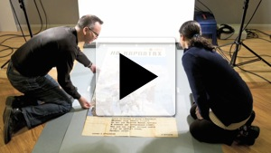

The present project has been achieved by strong interdisciplinary teamwork from different sections and services of the University. We have been very fortunate to have two CRCEES funded postgraduate interns working on the team: Benjamin Taylor (digitisation and conservation) and Laura Todd (research on WWII; provenance; and editing), both of whom are studying in Russian and Slavonic Studies.
Watch a video realised with Black Hawk Productions where project participants talk about the background to it and the challenges they have faced.
Professor Marsh joined Russian and Slavonic Studies at Nottingham at the outset of her academic career. Her interest in Russian art began in doctoral research on the connections between poetry and painting in the work of Maksimilian Voloshin (1877-1932), and continued in subsequent published work on Russian poetry, prose and drama. In her long teaching career she gave courses on Russian art as well as on drama, language, history and literature. In 2002, she was given a Lord Dearing Award for Outstanding Teaching.
In 2006 she was promoted to professor, and headed Russian and Slavonic Studies until 2009. Marsh was the Nottingham PI for the University's institutional membership of the Centre for Russian, Central and East European Studies (CRCEES, Glasgow) from 2006-2010. On her retirement in 2010, Marsh was made Emeritus Professor.
Marsh welcomed the opportunity to curate the 2008-09 exhibition Windows on War. Now regarded as works of art in their own right, the TASS windows have provided challenging material for research. Like theatrical production, the hand-painted posters are ephemeral. They will not survive if given over to public access.. This present resource is the realisation of a cherished ambition.
Manuscripts and Special Collections is part of the University Library. The department has been collecting archives since the 1930s, and has over 5 million documents and around 60,000 printed volumes in its collections. Exhibitions showcasing the collections are regularly mounted in a dedicated gallery at Lakeside Arts Centre on campus, and a programme of digitisation is helping make material more accessible to readers. Further information can be seen on our website.
If you have any questions about this online resource, please contact us at windowsonwar@nottingham.ac.uk
A multi-disciplinary team that the University calls on for specialist knowledge and expertise related to web and mobile technologies. With expertise ranging from research and analysis, through to design and development. Through collaborative and agile working methods, our goal is to produce innovative solutions that exceed what can be achieved by one party alone. The key challenge of this particular site was to make the posters the primary focus, yet surround them with extensive detail without it becoming over-whelming to the visitor.